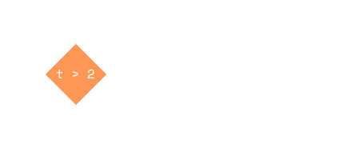
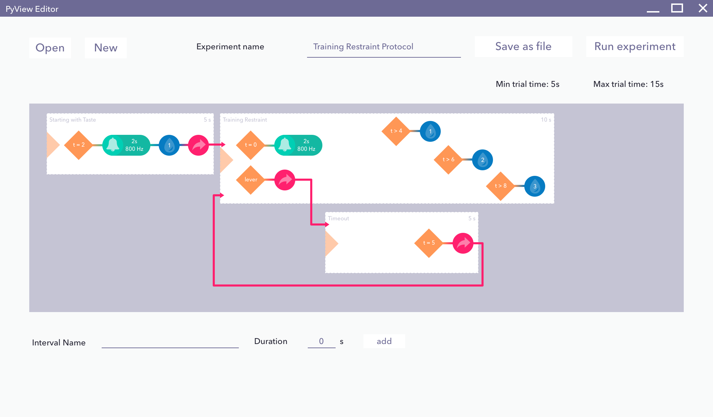
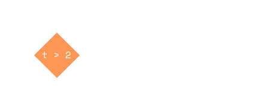
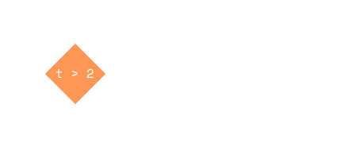

Empowering scientist to create hardware controlled experiments
@ Stony Brook University' s Neuroscience Dept. 2012
Once upon a summer
a professor and a post-doc wanted to find out which neurons fire upons in your brain when you are
expectating a reward.
Inherited Program
Connects to hardware to record events. Has UI for debugging. Most of the logic controlling the experiment
protocol is not visible.
How do the experiments work?
The classic experiment is to give the rat a drop of water at the start of a trial.
The No-Go interval tests restraint, where the rat will only get a drop of water if she doesn't press the
lever.
Is this how science really happens?!
Scientist should be able to run their experiments anytime consistently.
How about we make an experiment creator?
An experiment protocol is just a sequence of events, over a time period. They can be broken down into
intervals (wait, tone, reward, no-go) and actions (deliver reward).
Experiments they designed are saved in files, and can load into the execution program.
After playing around with the prototype, they gave me the go-ahead to build this framework.
and three weeks later...
Protocol Editor
Intervals can be added, edited, and deleted.
Protocols can be loaded to run anytime.
User testing, bug fixing, and soldering...
The editor built didn't provide affordance to re-arrange intervals.
And also included a new field in the tone interval to allow the tone to be played
at different frequencies.
Add different types of water in the valve (can we make the rats become sugar
addicts?)
Wait?! What if you want to loop or jump intervals?
With the experiment editor, they was able to run and accumulate data faster than
before. And also got
around
to
thinking of new variations to try. Some I had trouble modeling.
Can we jump to another interval?
What if when the rat fails to wait for reward, we play tone again instead of restarting the trial?
What if we want to skip the rest of the reward period, and go to another tone once the rat presses the
lever?
What about conditional rewards?
What if I gave the rats different types of water depending on how soon they press the lever?
What is the essence of these new protocols? What is our user trying to express?
Jumping to another interval breaks the timeline analogy we have been using in our
editor to express trial
time.
Triggering actions based on time within is a desire for conditional
control.
do give reward,
if lever pressed & t > 5
Defining new primatives
I added Jump as
an action, then attached a conditional to it, to only trigger if the condition is true.
Then gave slots to
an interval (at start, on lever press, when end) that can contain actions.
Reward and No Go can be represented as intervals.
Generalizing
If we make a "Play Tone" action, then we can get rid of typed intervals all
together.
And to provided even greater flexibility, I got rid of begin/lever/end slots in the
intervals, and just allowed
them to hold any number of conditions.
Intervals have conditions, when evaluated true, actions are triggered.
Final primatives
Intervals no longer typed, they just hold an array of conditions
Conditions Lever pressed? Or time checks:
t > 2, T > 10
Actions Reward, Play tone, Jump (to another interval)

Enter the graph editor

On to greater evils...
Afterwards the summer position ended, the lab did not have to hire another programmer because faculty and
students were able
to
make experiment protocols themselves.
What I didn't know back then
Version control might have solved the problem
Design thinking practices could have prevented having to switching model
representation.
Reflection
Was the framework and GUI editor excess? Could we just have
easily
solved the
problem with just writing a
library of functions? And taught that to the scientist?


 
